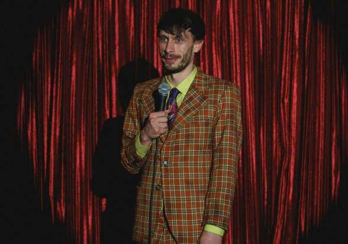
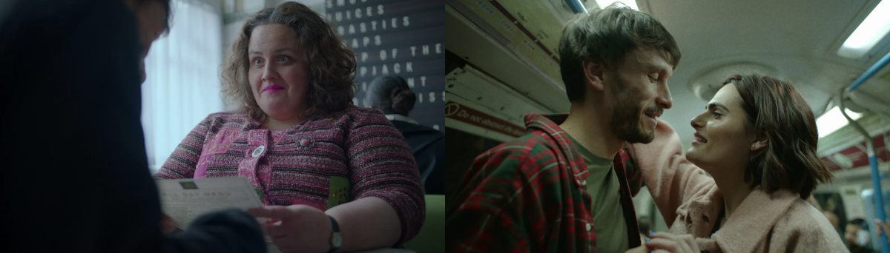
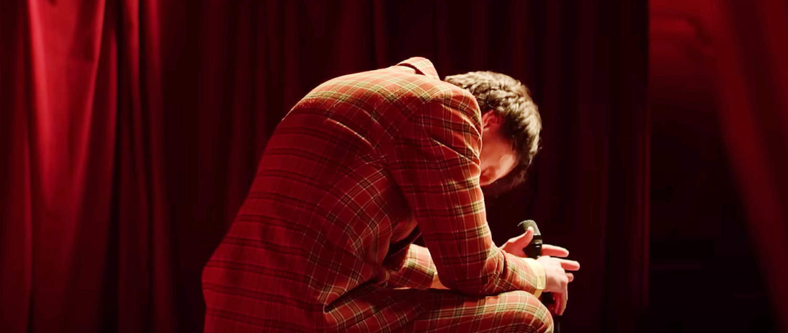

Новый мини-сериал на Netflix под названием «Baby Reindeer» не типичное праздничное шоу.
В то время как название может ассоциироваться с милыми оленятами, цветовая палитра сериала отражает более темную реальность.

Донни Данн
основные приемы

Донни Данн и Марта
Тусклые и темные оттенки: основная палитра включает в себя серые, синие и коричневые тона. Это создает ощущение унылости и изоляции, отражая спираль вниз главного героя.
Контраст

Донни Данн
В сериале есть моменты резкого контраста, например, яркая красная куртка или неоновый знак. Эти моменты выделяются и дополнительно подчеркивают мрачность окружающей среды. Но также оставляют место надежде.